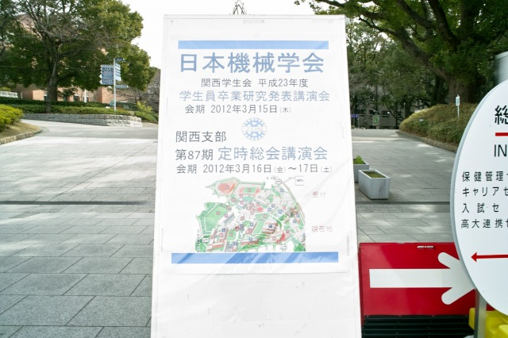
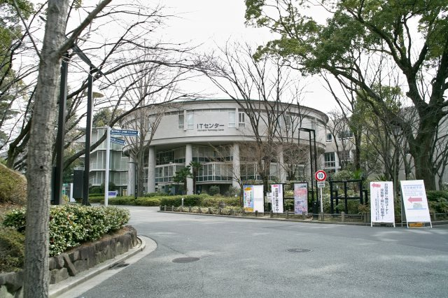
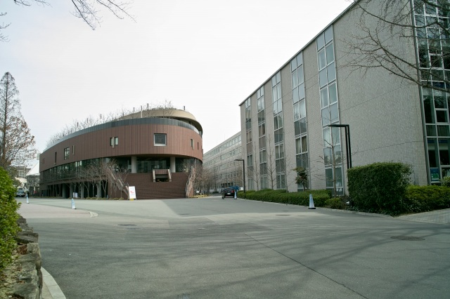
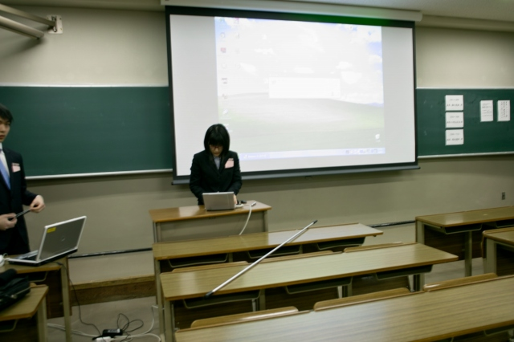
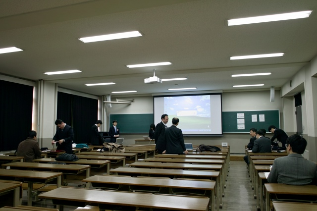
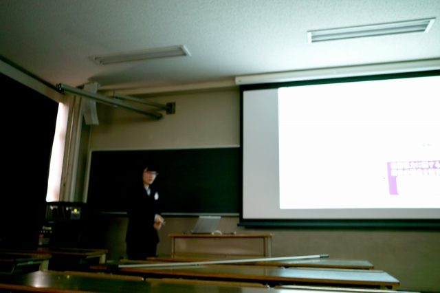
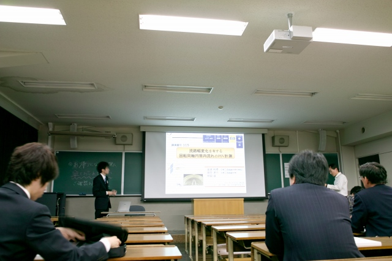
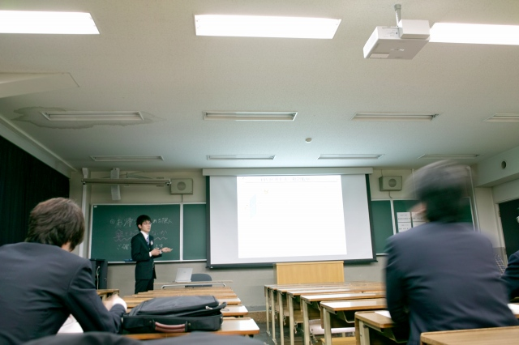
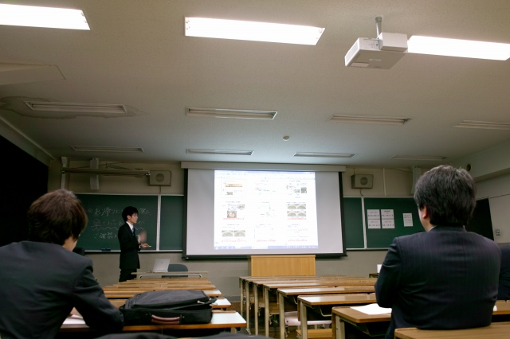

| ・（社）日本機械学会関西支部 第87期定時総会講演会＠関西大学 (H24.03.16-17) | |||
去年は3人発表でしたが、今年はK岡さん、K城くんの2人です。K岡さんは去年富山で発表してますし、K城くんは発表慣れしてるので安心して見てられますね。2人とも前日のお仕事の影響なしですね。 |
|||
|

卒論の次は定時総会 |

工芸資料館がコレクションする村野藤吾(1891-1984)作品 | ||
|

右奥の建屋が会場 |

まずはK岡さん | ||
|

そろそろ時間 |

発表も質疑も危なげないですね | ||
|
次はK城くん、マイPC |

ちょうど良いテンポ | ||
|

落着いてます |

質疑もしっかりしてます | ||